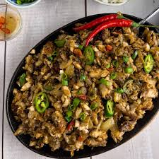
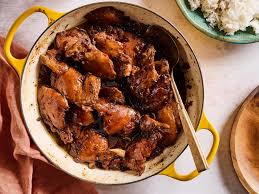

| "ULAM" | RECIPE |
|---|
|  SISIG |
a mix of crispy pork parts, chicken livers, and a spicy, sour dressing! | - 1 lb pork belly - 1 whole pork snout + jowls - 1 pig ear - 1/2 c chicken liver FOR BOILING: - 1 c vinegar - 1/2 c soy sauce - 12 garlic cloves (1 head of garlic’s worth) - 2 bay leaves - 1 T salt - 1/2 t peppercorns - 1 sisig seasoning packet, or: - 1/4 c kalamansi juice - 1/4 c vinegar - 1 t salt - 1/2 t ground pepper - 1 t garlic powder - 1 T oil - 10 thai chilis, chopped - 3/4 c chopped shallots (can also use red onion) - 1/4 c mayonnaise - 1 egg, for topping - 1 T butter (optional) |
1. Combine pork belly, face, ears, vinegar, soy sauce in a stock pot. Fill with water until meat is covered. Add bay leaves, salt, and peppercorns. Bring to a boil then simmer for at least an hour or until meat is no longer tight and tough. 2. Remove meat from pot and grill for 10 minutes. 3. Chop pork belly and face meat into 1/4 - 1/2 inch cubes. Finely chop pig ear pieces. 4. Mix chopped pork in a bowl and add Thai chilis, kalamansi juice, vinegar, salt, pepper, and garlic powder (or sisig seasoning packet) 5. In a saute pan over medium heat, add 1 T oil and saute shallots for 1-2 minutes. Add chicken livers; mash and saute until cooked through. 6. Add chopped pork (with liquids) to saute pan, saute until meat is hot. Add mayonnaise and combine. 7. (Optional) Heat a cast iron platter, add 1 T butter, add a serving of sisig and top with a cracked egg while still hot. |
| "ULAM" | RECIPE |
|---|
| SINIGANG | The Philippines' sour native soup! "asim kilig" | - 1 tablespoon vegetable oil - 1 small onion, chopped - 1 teaspoon salt - 1 (1/2 inch) piece fresh ginger, chopped - 2 plum tomatoes, cut into 1/2-inch dice - 1 pound bone-in pork chops - 4 cups water, more if needed - 1 (1.41 ounce) package tamarind soup base (such as Knorr®) - ½ pound fresh green beans, trimmed | 1. Heat vegetable oil in a skillet over medium heat. Add onion; cook and stir until softened and translucent, about 5 minutes. Season with salt. 2. Stir in ginger, tomatoes, and pork chops. Cover and reduce heat to medium-low. Turn the pork occasionally, until browned. 3. Pour in water and tamarind soup base. Bring to a boil, then reduce heat and simmer until the pork is tender and cooked through, about 30 minutes. 4. Stir in green beans and cook until tender. |
| "ULAM" | RECIPE |
|---|
| AFRITADA | traditional Filipino chicken afritada! | - 1 tablespoon vegetable oil - 3 cloves garlic, chopped - 1 onion, chopped - 1 cup seeded and chopped tomatoes - 1 (3 pound) whole chicken, cut into pieces - 3 cups water - 1 cup tomato sauce (Optional) - 3 potatoes, quartered - 1 green bell pepper, seeded and cut into matchsticks - 1 carrot, chopped - salt and ground black pepper to taste | 1. Heat oil in a large wok over medium heat. Add garlic; cook and stir until fragrant, about 3 minutes. Add onion; cook and stir until translucent, about 5 minutes. Stir in chopped tomatoes; cook, mashing with a fork, until flesh and skin separate, about 5 minutes. 2. Add chicken to the wok; cook and stir until lightly browned, about 5 minutes. Pour in water; cover and bring to a boil. Stir in tomato sauce; simmer until flavors combine, about 15 minutes. 3. Add potatoes to the wok; simmer until tender, about 10 minutes. Stir in bell pepper and carrot; simmer until softened, about 5 minutes. Season with salt and black pepper. |
| "ULAM" | RECIPE |
|---|
|  ADOBO | a stewed dish, usually made with chicken or pork. | - 2 tablespoons vegetable oil - 1 (3 pound) chicken, cut into pieces - 1 large onion, quartered and sliced - 2 tablespoons minced garlic - ⅔ cup low sodium soy sauce - ⅓ cup white vinegar - 1 tablespoon garlic powder - 2 teaspoons black pepper - 1 bay leaf | 1. Heat vegetable oil in a large skillet over medium-high heat. Cook chicken pieces until golden brown, 2 to 3 minutes per side. Transfer chicken to a plate and set aside. 2. Add onion and garlic to the skillet; cook until softened and brown, about 3 to 5 minutes. 3. Pour in soy sauce and vinegar and season with garlic powder, black pepper, and bay leaf. 4. Return chicken to pan, increase heat to high, and bring to a boil. Reduce heat to medium-low, cover, and simmer until chicken is tender and cooked through, 35 to 40 minutes. |